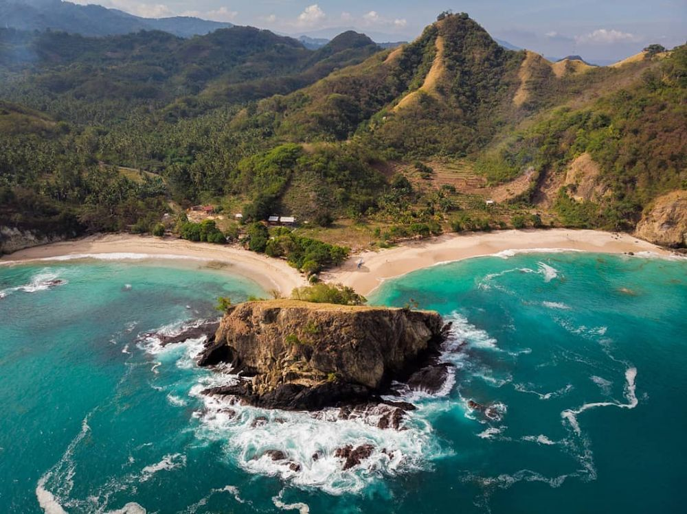
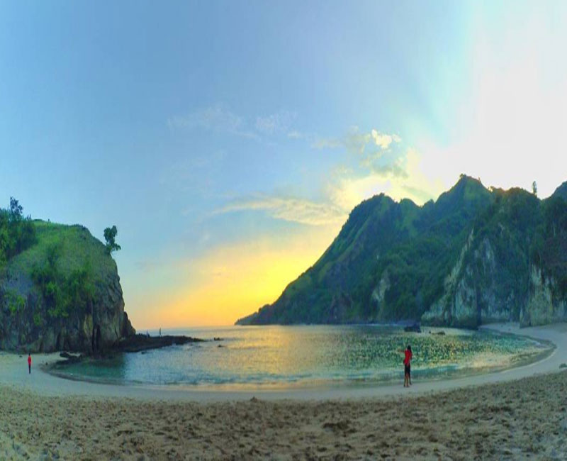

WISATA PANTAI KOKA
Pantai Koka atau yang dijuluki dengan The Dream Beach ini terletak di Desa Wolowiro,
Kecamatan Paga, Kabupaten Sikka, Kota Maumere, Propinsi Nusa Tenggara Timur. Pantai ini merupakan salah satu obyek wisata favorit di Maumere.
Dari Kota Maumere jaraknya sekitar 48 km.
Pemandangan indah dengan hamparan pasir putih dan birunya laut di Pantai Koka menjadi daya tarik tersendiri.
Air laut di pantai ini begitu jernih dan masih alami belum terjamah oleh tangan-tangan jahil.
Terumbu karang yang menghiasi air lautnya juga turut mempercantik pemandangan Pantai Koka.
Bahkan warga setempat memanfaatkan keberadaan hasil laut Pantai Koka sebagai sandaran hidupnya.
Pantai Koka bisa menjadi pilihan lokasi yang tepat bagi yang hobi berselancar. Hal ini terkait dengan ombak yang menjadi ciri khas Pantai Koka.
Ombak di pantai ini terbilang cukup besar dan bisa mencapai ketinggian 1,5 m dengan terpaan yang sangat kuat.

- Rute dan Akses Lokasi
Rute perjalanan untuk menuju lokasi pantai Koka dapat ditempuh dari Jakarta – Denpasar.
Setelah itu, anda bisa melanjtkan perjalanan menuju bandara Frans Seda Maumere.
Jika sudah tiba di Maumere anda bisa naik bus menuju wisata pantai Koka.
Pilihlah bus jurusan Ende dan turun di Paga. Biasanya untuk menempuh jalan tersebut akan dikenai tarif bus sekitar 15 ribu rupiah.
Dari bandara Maumere kamu juga bisa menyewa mobil untuk menuju ke Pantai Koka dengan tarif mulai dari Rp. 400.000
sudah plus sopir per hari atau Rp. 50.000 per jam.
- Harga Tiket
Pantai Koka Nusa Tenggara Timur ini buka setiap hari mulai pukul 08.00 hingga pukul 18.00.
Adapun biaya tiket masuk kawasan wisata pantai ini adalah Rp 10.000 per orang.
Bagi anda yang membawa kendaraan pribadi diharapkan untuk membayar biaya parkir sebesar Rp 5.000/ sepeda motor dan Rp 10.000/ mobil.
- Fasilitas dan Akomodasi
- Area parkir
- Warung makan
- Toilet
- Spot foto menarik

- Tips Saat ke Pantai Koka
Bawalah perbekalaan Anda secukupnya karena di sekitar Pantai ini tidak terdapat cafe atau warung.